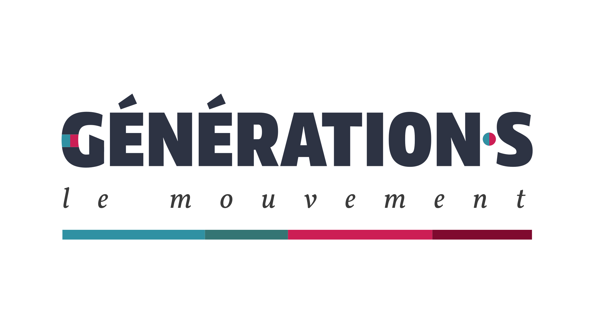
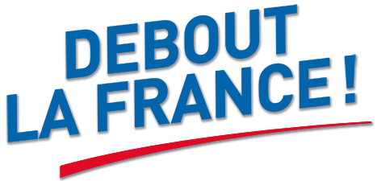
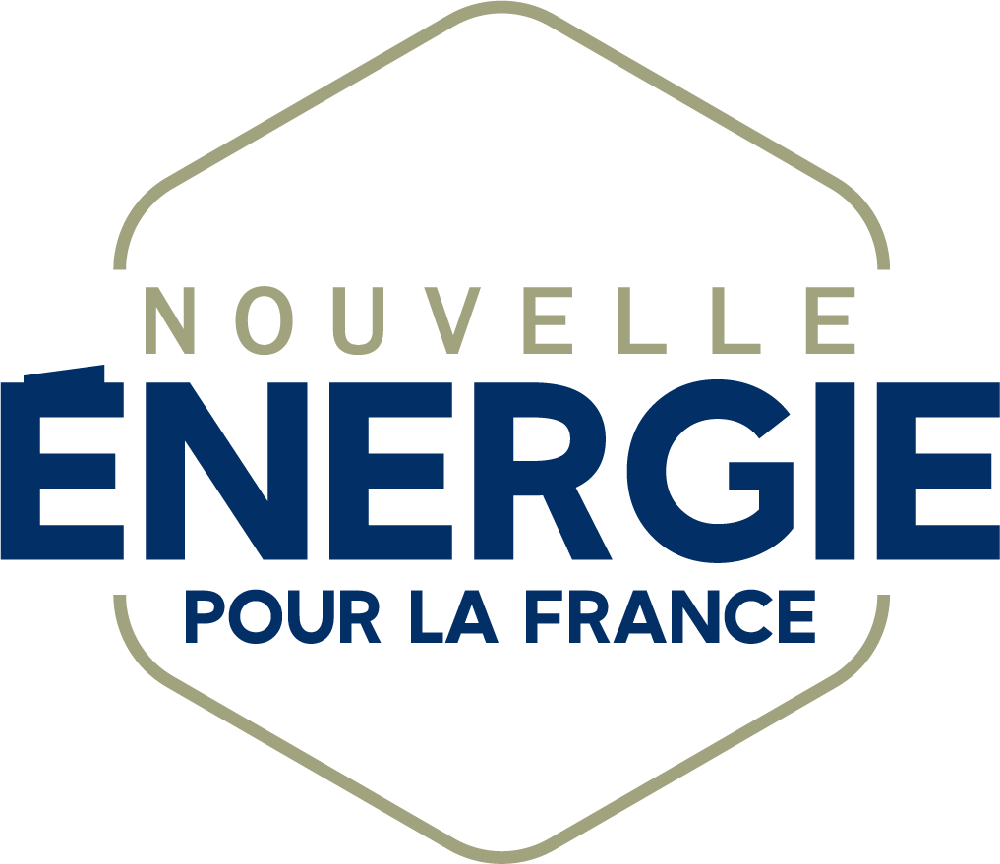

Sources et définitions
Définitions
10- Démocratie
- Système politique dans lequel le pouvoir appartient au peuple, qui en est la source. Le mot désigne la forme de gouvernement, ou l'État qui fonctionne selon ce principe. Il vient du grec dêmokratia. Larousse ↗
- Démocratie représentative
- Régime dans lequel le peuple élit des représentants chargés de décider en son nom, pour un mandat renouvelable ou non selon la Constitution. Elle s'oppose à la démocratie directe, où les citoyens décident eux-mêmes. Elle s'est développée avec le régime parlementaire britannique, puis avec les révolutions américaine et française. Larousse ↗ · Larousse (encyclopédie) ↗
- République
- Forme d'organisation politique dans laquelle les détenteurs du pouvoir l'exercent en vertu d'un mandat conféré par le corps social. Elle s'oppose à la monarchie sans se confondre avec la démocratie ; le plus souvent, le chef de l'État n'y est au pouvoir ni à vie ni de façon héréditaire. Le mot vient du latin res publica, « chose publique ». L'article 1er de la Constitution définit la France comme une République indivisible, laïque, démocratique et sociale. Larousse (encyclopédie) ↗ · Constitution ↗
- Fascisme
- Système politique instauré en Italie entre 1922 et 1945, fondé sur le pouvoir dictatorial d'un parti unique, un nationalisme exacerbé et le corporatisme. Par extension, doctrine ou tendance qui cherche à établir un régime autoritaire sur ce modèle. Le mot vient de l'italien fascio, « faisceau », en référence au faisceau des licteurs de la Rome antique, repris comme emblème. Larousse ↗
- Autoritarisme
- Manière d'exercer le pouvoir de façon autoritaire, qui se traduit notamment par la primauté de l'exécutif et la restriction des libertés politiques. Larousse ↗
- Dictature
- Régime politique dans lequel le pouvoir est détenu par une personne ou un groupe de personnes (junte) qui l'exercent sans contrôle, de façon autoritaire. Son contraire est la démocratie. Larousse ↗
- Oligarchie
- Régime politique dans lequel le pouvoir appartient à un petit nombre de personnes ou de familles, ou à une classe sociale restreinte et privilégiée, ainsi que l'ensemble de ces personnes. Le mot vient du grec oligos, « peu nombreux », et arkhê, « commandement ». Larousse ↗ · CNRTL ↗
- Aristocratie
- Forme de gouvernement dans laquelle le pouvoir est détenu par un petit groupe de personnes constituant l'élite, en raison de leur naissance, de leur fortune ou de leurs qualités. Le mot vient du grec aristos, « le meilleur », et kratein, « commander ». Il désigne aussi la classe des nobles. Larousse ↗ · CNRTL ↗
- Régalien
- Se dit des fonctions politiques et administratives, comme la police, la défense ou la justice, qui dépendent directement de l'État ; d'où l'expression « ministères régaliens ». Le mot désignait à l'origine ce qui appartenait en propre au roi : le droit de paix et de guerre, de faire la loi, de battre monnaie. Larousse ↗ · CNRTL ↗
- Institution
- Au pluriel, l'ensemble des structures et des modes d'organisation qui encadrent la vie politique d'une société. Au singulier, l'action de mettre en place ou de fonder quelque chose. Larousse ↗
Les institutions françaises
11Les institutions de la Ve République sont fixées par la Constitution du 4 octobre 1958.
Le Président de la République
Élu au suffrage universel direct pour cinq ans. Il veille au respect de la Constitution, assure par son arbitrage le fonctionnement régulier des pouvoirs publics et garantit l'indépendance nationale, l'intégrité du territoire et le respect des traités (article 5). Il nomme le Premier ministre, préside le Conseil des ministres, promulgue les lois, est le chef des armées et peut dissoudre l'Assemblée nationale. L'article 16 lui permet d'exercer des pouvoirs exceptionnels en cas de crise grave.
Le Gouvernement
Composé du Premier ministre et des ministres. Il détermine et conduit la politique de la Nation, dispose de l'administration et de la force armée, et est responsable devant le Parlement (article 20). Le Premier ministre dirige l'action du Gouvernement (article 21).
L'Assemblée nationale
577 députés, élus au suffrage universel direct pour cinq ans. Avec le Sénat, elle vote la loi, contrôle l'action du Gouvernement et évalue les politiques publiques (article 24). En cas de désaccord entre les deux chambres, c'est elle qui a le dernier mot.
Le Sénat
348 sénateurs, élus au suffrage universel indirect et renouvelés par moitié tous les trois ans. Il partage avec l'Assemblée nationale le vote de la loi et le contrôle du Gouvernement.
Le Conseil constitutionnel
Neuf membres nommés pour neuf ans, non renouvelables : trois par le Président de la République, trois par le président de l'Assemblée nationale et trois par le président du Sénat, avec un renouvellement par tiers tous les trois ans. Les anciens présidents de la République y siègent de droit. Il contrôle la conformité des lois à la Constitution, avant leur promulgation ou, depuis 2010, par la question prioritaire de constitutionnalité, et veille à la régularité de l'élection présidentielle et des référendums. Ses décisions s'imposent à toutes les autorités et ne sont pas susceptibles de recours.
Le Conseil d'État
Juge administratif : il tranche les litiges entre les citoyens et l'administration, en dernier ressort pour la légalité des actes administratifs. Il conseille aussi le Gouvernement et le Parlement par des avis juridiques, notamment sur les projets de loi et certains décrets.
L'autorité judiciaire
Elle garantit la liberté individuelle (article 66). Les juridictions civiles et pénales sont organisées en degrés ; en matière pénale, le tribunal de police juge les contraventions, le tribunal correctionnel les délits et la cour d'assises les crimes. La Cour de cassation est la plus haute juridiction de l'ordre judiciaire.
La Cour des comptes
Elle veille à la régularité, à l'efficience et à l'efficacité de l'emploi de l'argent public. Elle certifie chaque année les comptes de l'État et du régime général de la Sécurité sociale, assiste le Parlement et le Gouvernement dans l'évaluation des politiques publiques et juge les comptables publics.
Le Conseil économique, social et environnemental
Assemblée consultative inscrite dans la Constitution, dont les membres ne sont pas élus mais désignés par les principales organisations de la société civile. Il éclaire le Gouvernement et le Parlement et contribue à l'évaluation des politiques publiques.
Le Défenseur des droits
Autorité indépendante prévue par la Constitution (article 71-1) et régie par la loi organique du 29 mars 2011. Il veille au respect des droits et libertés dans les relations des citoyens avec les administrations de l'État et lutte contre les discriminations. Il émet des recommandations et des avis, mais ne rend pas de décisions contraignantes.
Les collectivités territoriales
L'organisation de la République est décentralisée (article 1er). Les collectivités territoriales sont les communes, les départements, les régions, les collectivités à statut particulier et les collectivités d'outre-mer (article 72).
Sources
169 sources sur 169 — triez ou filtrez par catégorie, nom de source ou date.
Aucune source ne correspond aux filtres.
Sites officiels des partis
21
Lutte ouvrière
lutte-ouvriere.org
Révolution permanente
revolutionpermanente.fr
NPA – Révolutionnaires
npa-revolutionnaires.orgNPA – L'Anticapitaliste
npa-lanticapitaliste.org
La France insoumise
lafranceinsoumise.fr
Parti communiste français
pcf.fr
Parti socialiste
parti-socialiste.fr
Les Écologistes
lesecologistes.fr
Place publique
place-publique.eu
Génération.s
generation-s.frParti radical de gauche
partiradicaldegauche.fr
Renaissance
parti-renaissance.fr
Mouvement démocrate
mouvementdemocrate.fr
Horizons
horizonsleparti.frUnion des démocrates et indépendants
parti-udi.fr
Les Républicains
republicains.fr
Debout la France
debout-la-france.fr
Nouvelle Énergie
unenouvelleenergie.fr
Union des droites pour la République
udr.fr
Rassemblement national
rassemblementnational.fr
Reconquête
parti-reconquete.fr
Crédits des logos (Wikimedia Commons)
21Lutte ouvrière
File:Logo Lutte Ouvrière.svgRévolution permanente
File:Révolution Permenente.pngNPA – Révolutionnaires
File:Logo-NPA Revo.svgNPA – L'Anticapitaliste
File:Logo du NPA - l'Anticapitaliste.jpgLa France insoumise
File:Logo France Insoumise.svgParti communiste français
File:Logo du Parti communiste français (2018)-étoile.svgParti socialiste
File:Logo du Parti socialiste.pngLes Écologistes
File:French party Écologistes.svgPlace publique
File:Logo Place publique.svgGénération.s
File:G·s Logo-complet couleur.svgParti radical de gauche
File:Logo - PRG, le centre gauche.svgRenaissance
File:Renaissance parti logo.svgMouvement démocrate
File:MoDem logo 2019 - Cropped.svgHorizons
File:Logo Horizons.svgUnion des démocrates et indépendants
File:Logo UDI 2019.svgLes Républicains
File:Les Républicains - logo (France, 2023) (cropped).svgDebout la France
File:Debout la France logo (2022).pngNouvelle Énergie
File:Logo-blanc-bleu.pngUnion des droites pour la République
File:UDR logo.svgRassemblement national
File:Logo Rassemblement National (cropped).svgReconquête
File:Logo du parti Reconquête - Version courte.svg


-%C3%A9toile.svg)


.svg)

Crédits des photos
15
Nathalie Arthaud
File:Nathalie Arthaud (LO) 19-05-2024.jpg
Anasse Kazib
File:Anasse Kazib, décembre 2021.jpg
Selma Labib
2027presidentielle.fr
Jean-Luc Mélenchon
File:Jean Luc Mélenchon en mai 2026- 55261894422 (cropped).jpg
Fabien Roussel
File:Roussel Fabien 1.jpg
Raphaël Glucksmann
File:1720448398743 20240708 GLUCKSMANN Raphael FR 006.jpg
Karim Bouamrane
File:Karim Bouamrane en 2026 (cropped).jpg
Édouard Philippe
File:Edouard Philippe 3x4 crop.jpg
Gabriel Attal
File:Gabriel Attal 2025 (close crop).jpg
Bruno Retailleau
File:Bruno Retailleau - Ministre de l'Intérieur français (cropped).jpgNicolas Dupont-Aignan
File:Nicolas Dupont-Aignan, homme politique français.jpg
Marine Le Pen
File:Marine Le Pen 2025 (cropped).jpg
Éric Zemmour
File:Portrait d'Éric Zemmour, avril 2022.jpgDavid Lisnard
File:David Lisnard en 2026.jpgMarine Tondelier
File:Huma2023MarineTondelier (cropped).jpg
_19-05-2024.jpg)


.jpg)


.jpg)

.jpg)
.jpg)
.jpg)